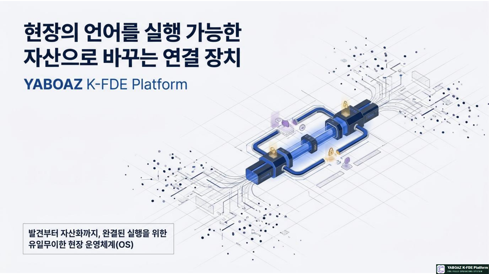
YABOAZ 현장의 언어 참고 슬라이드 011. YABOAZ의 핵심 정의
YABOAZ K-FDE Platform은 현장의 비정형 언어를 수집하고 구조화된 지식으로 바꾸며, AI 판단과 인간 승인, 워크플로 실행, KPI 검증과 자산화까지 연결하는 한국형 FDE 현장 실행 운영체계입니다.
현장 언어 → 증거 → 온톨로지 → AI 판단 → 인간 승인 → 실행 → 검증 → 재사용 자산
YABOAZ는 현장의 언어를 실행 가능한 자산으로 바꾸는 연결 장치입니다.
자료가 부족한 것이 아니라 자료와 문제, 판단, 행동이 연결되지 않아 실행이 늦어지는 것이 핵심 문제입니다.
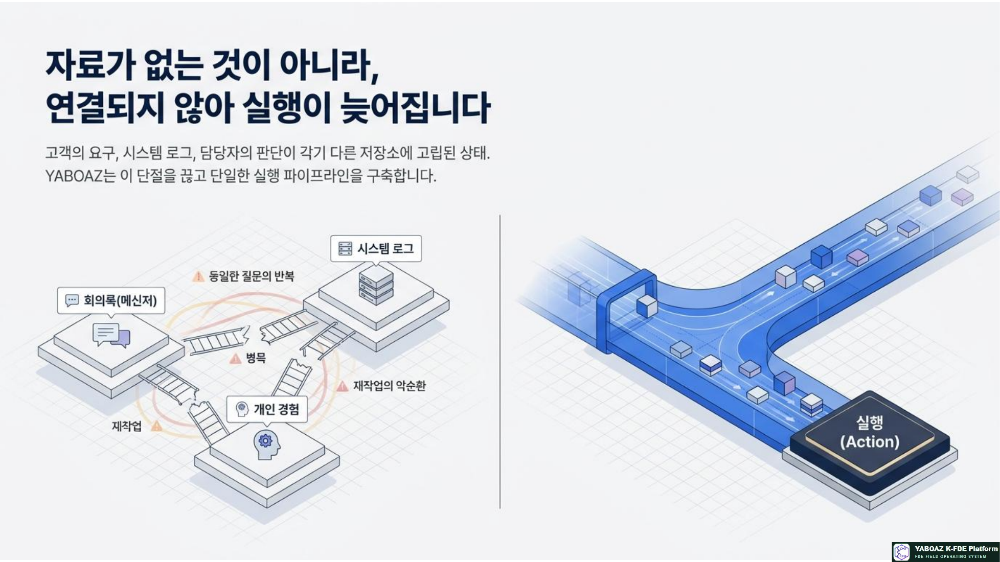
YABOAZ 현장의 언어 참고 슬라이드 022. YABOAZ의 본질
단순한 LMS가 아닙니다지식 전달에 그치지 않고 현장 문제를 실행하고 결과를 검증합니다.
단순한 컨설팅 도구가 아닙니다보고서가 아니라 온톨로지·Agent·워크플로를 실제로 만듭니다.
단순한 챗봇이 아닙니다답변을 넘어 승인과 행동, 기록, KPI로 연결합니다.
단순한 SaaS가 아닙니다현장 문제를 반복 가능한 기능과 영구 자산으로 발전시킵니다.
연결의 역할현장의 말과 경험을 AI가 이해할 수 있는 구조로 바꾸고, 사람이 책임 있게 승인할 수 있는 실행 체계로 전환합니다.
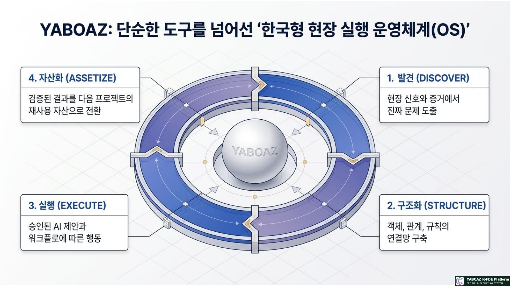
YABOAZ 현장의 언어 참고 슬라이드 033. YABOAZ의 4단계 구조
01Discover · 발견
현장 관찰, 인터뷰, 문서, 로그, 담당자 경험을 모아 문제의 실체를 포착합니다. 공식 프로세스와 실제 업무의 차이, 반복되는 오류와 병목을 확인합니다.
02Structure · 구조화
현장 언어를 객체·속성·관계·상태·이벤트·규칙·행동으로 번역합니다. 사람의 경험을 AI가 이해할 수 있는 실행 지식으로 전환합니다.
03Execute · 실행
AI가 초안을 만들고 사람이 검토·승인한 뒤 워크플로가 실행됩니다. 모든 판단과 실행은 기록으로 남습니다.
04Assetize · 자산화
질문 세트, 온톨로지 모델, Agent 사양, 워크플로, KPI와 운영 매뉴얼을 다음 프로젝트에서 재사용하도록 축적합니다.
Discover → Structure → Execute → Assetize → 다음 프로젝트 확장
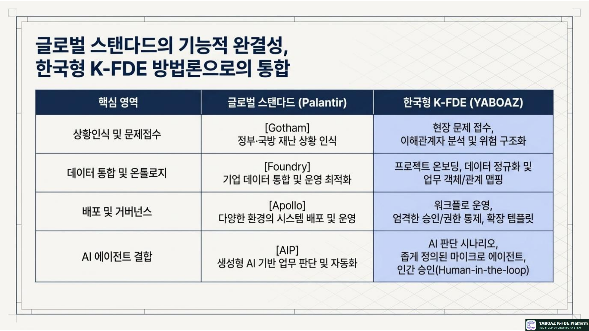
YABOAZ 현장의 언어 참고 슬라이드 044. 4대 설계 철학
01 · Evidence Driven가설과 사실을 분리하고 모든 주장을 출처, 시점, 신뢰도와 연결합니다.
02 · Human in the LoopAI는 대안을 제안하고 최종 책임, 승인, 위험 통제와 예외 처리는 사람이 담당합니다.
03 · Small Actions전체를 한 번에 바꾸지 않고 하나의 문제와 반복 업무를 끝까지 실행해 빠르게 검증합니다.
04 · Reusable Assets결과물을 보고서로 끝내지 않고 모델, 워크플로, 매뉴얼과 템플릿으로 축적합니다.
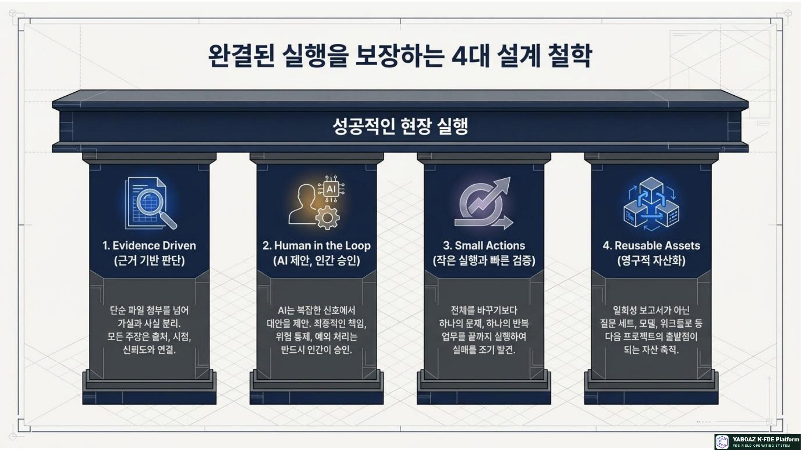
YABOAZ 현장의 언어 참고 슬라이드 05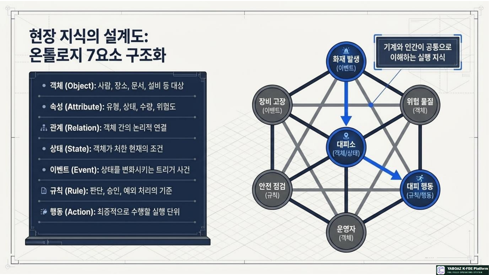
YABOAZ 현장의 언어 참고 슬라이드 065. 온톨로지 7요소의 역할
온톨로지 7요소는 현장 지식을 기계와 인간이 함께 이해하는 구조로 만드는 설계도입니다.
객체사람, 장소, 문서, 설비와 같은 대상
속성유형, 상태, 수량, 위험도와 같은 특징
관계객체 사이의 논리적 연결
상태객체가 처한 현재 조건
이벤트상태를 변화시키는 사건
규칙판단·승인·예외 처리의 기준
행동최종적으로 수행할 실행 단위
화재 대피 예시위험 물질·대피소·운영자·화재 발생·안전 점검·대피 행동을 연결하면 AI는 어떤 상황에서 무엇을 판단하고 어떤 행동을 추천해야 하는지 이해할 수 있습니다.
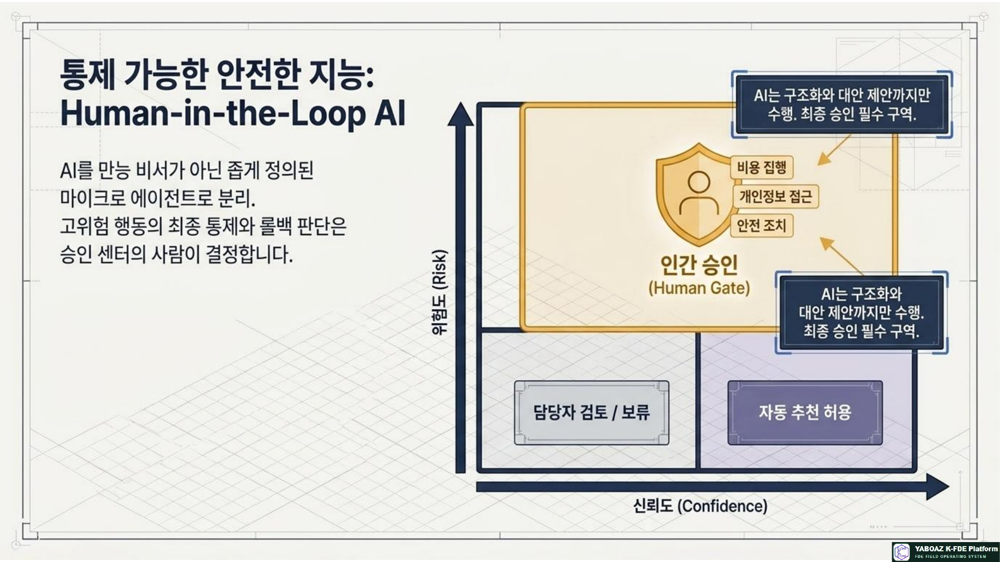
YABOAZ 현장의 언어 참고 슬라이드 07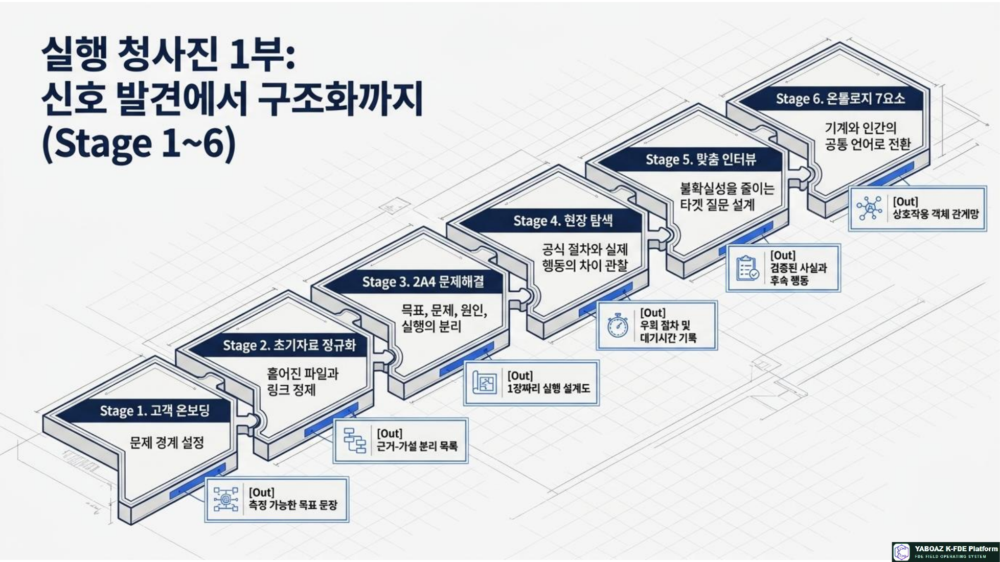
YABOAZ 현장의 언어 참고 슬라이드 086. Human-in-the-Loop의 의미
YABOAZ는 AI가 모든 것을 자동 결정하는 방식을 경계합니다. AI는 판단 초안을 제안하고, 사람은 맥락과 위험을 검토하며, 승인된 행동만 실행합니다.
AI 판단 초안 → 사람의 검토 → 위험도별 승인 게이트 → 실행 → 판단·실행 기록
AI가 담당하는 일신호 탐색, 자료 요약, 패턴 발견, 대안 제안, 누락 알림
사람이 담당하는 일맥락 확인, 예외 판단, 최종 승인, 책임 있는 의사결정
안전, 재난, 의료, 금융, 인사, 법무, 공공행정처럼 책임성과 추적성이 중요한 분야에서 이 구조는 필수입니다.
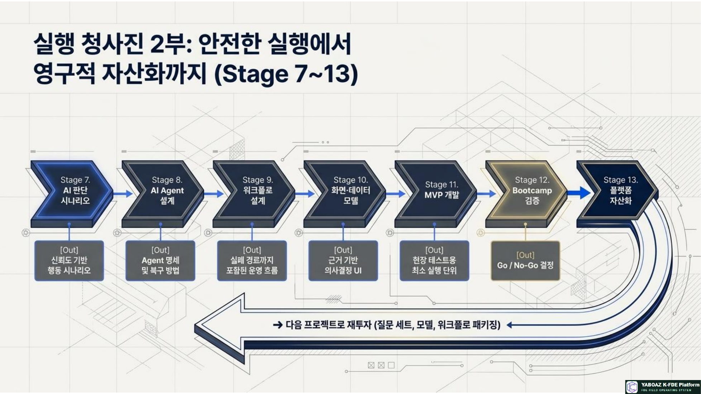
YABOAZ 현장의 언어 참고 슬라이드 097. 13단계 실행 흐름
실행 청사진 1부 · 신호 발견에서 구조화까지
01 문제 접수현장 요청과 문제 신호를 등록합니다.
02 자료 정규화문서·로그·인터뷰의 형식과 출처를 정리합니다.
03 2A4 문제해결문제를 실행 가능한 단위로 분해합니다.
04 현장 탐색실제 업무 동선과 병목을 확인합니다.
05 맞춤 인터뷰역할별 판단 기준과 예외를 수집합니다.
06 온톨로지 7요소현장 언어를 표준 구조로 번역합니다.
실행 청사진 2부 · 안전한 실행에서 자산화까지
07 AI 판단 시나리오근거와 추천 범위를 정의합니다.
08 AI Agent 설계역할·도구·권한·승인·예외를 명세합니다.
09 워크플로 설계판단·승인·행동·기록의 순서를 만듭니다.
10 UI·데이터 모델사용자 화면과 데이터 흐름을 연결합니다.
11 MVP 개발작은 업무 범위로 작동하는 해법을 만듭니다.
12 Bootcamp 검증사용자 피드백과 KPI로 효과를 확인합니다.
13 플랫폼 자산화검증 결과를 다음 프로젝트의 출발점으로 등록합니다.
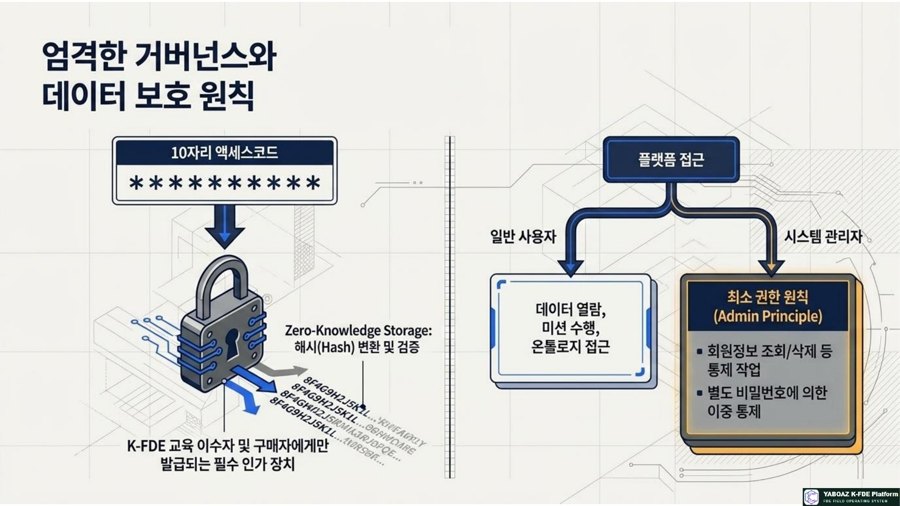
YABOAZ 현장의 언어 참고 슬라이드 108. 거버넌스와 데이터 보호
YABOAZ는 빠른 실행만 추구하지 않습니다. 기업과 공공 프로젝트에 적용되려면 엄격한 거버넌스와 데이터 보호가 함께 설계되어야 합니다.
권한역할별 접근과 행동 권한을 관리합니다.
출처·버전자료의 출처, 시점, 수정 이력을 추적합니다.
승인 이력누가 어떤 판단을 승인했는지 기록합니다.
데이터 보호개인정보와 민감정보의 노출을 제한합니다.
판단 근거AI 추천의 근거와 신뢰도를 표시합니다.
최종 승인고위험 행동은 사람의 책임과 승인 아래 실행합니다.
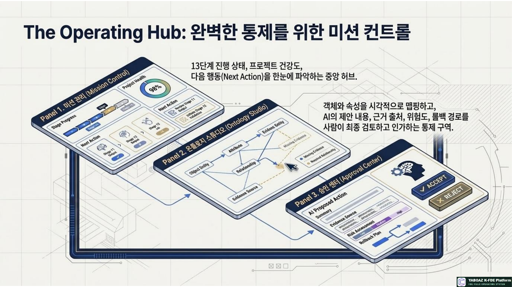
YABOAZ 현장의 언어 참고 슬라이드 119. 산업 관통 실행 시나리오
안전관리 보고 지연문제 위험 신호 누락 → 해결 위험·작업·담당자 온톨로지와 인간 승인 → 결과 초동 대응 속도 향상
고객 문의 반복문제 중복 답변 → 해결 정책·답변 객체 연결과 근거 기반 추천 → 결과 재문의율 감소와 답변 자산화
프로젝트 자료 단절문제 자료 분산 → 해결 출처·버전 정규화와 누락 인터뷰 → 결과 온보딩 템플릿 자산화
승인 업무 병목문제 대기시간 장기화 → 해결 승인 조건과 예외 규칙 구조화 → 결과 평균 승인시간 단축
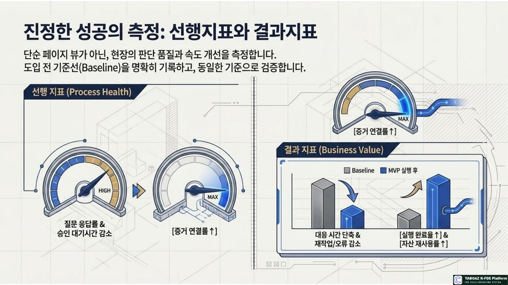
YABOAZ 현장의 언어 참고 슬라이드 1210. Palantir와 YABOAZ의 관계
| 핵심 영역 | Palantir | YABOAZ |
|---|
| 상황 인식 | Gotham | 현장 문제 접수·이해관계자 분석·위험 구조화 |
| 데이터 통합 | Foundry | 프로젝트 온보딩·자료 정규화·객체·관계 매핑 |
| 배포·거버넌스 | Apollo | 워크플로 운영·승인·권한 통제·확장 템플릿 |
| AI 에이전트 | AIP | AI 판단 시나리오·마이크로 Agent·인간 승인 |
Palantir는 글로벌 스탠더드의 기술 플랫폼이고, YABOAZ는 한국형 FDE 방법론으로 현장 적용·교육·실행·자산화를 돕는 실행 계층입니다.
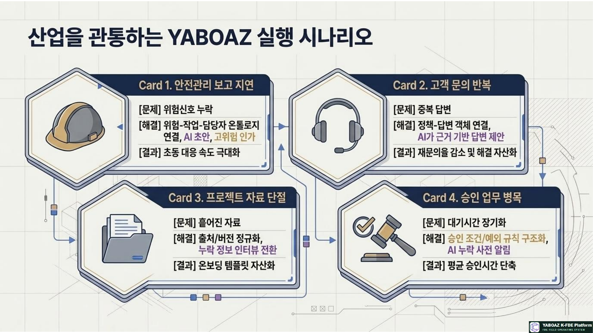
YABOAZ 현장의 언어 참고 슬라이드 1311. 역할별 가치
FDE현장 문제를 구조화하고 실행 가능한 해결책으로 전환합니다.
교육생실제 프로젝트 기반 포트폴리오와 자산 이력을 쌓습니다.
기업반복되는 문제를 자산화하고 내부 실행 역량을 높입니다.
IT·개발자불명확한 요구사항을 구조화된 설계로 전달받습니다.
컨설턴트보고서 중심 모델을 실행·검증·자산화로 확장합니다.
아카데미·협회교육·자격·실습·인증·프로젝트를 하나로 운영합니다.
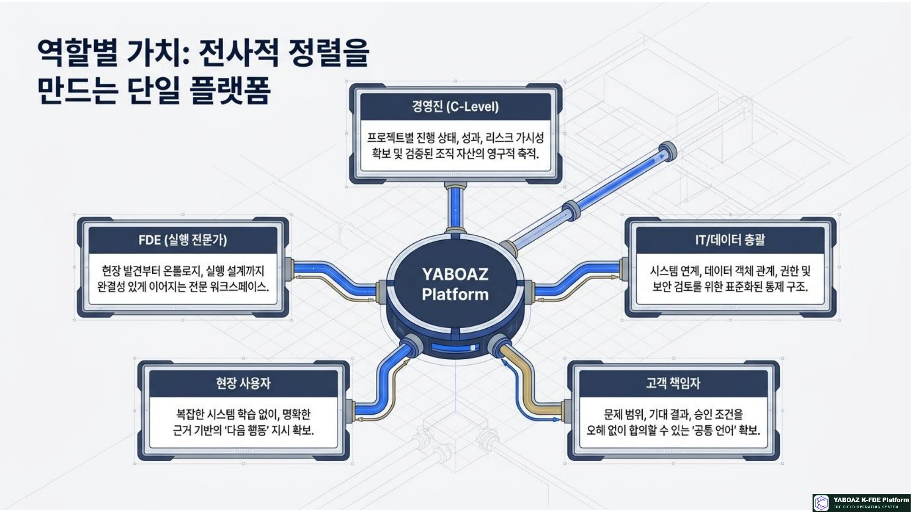
YABOAZ 현장의 언어 참고 슬라이드 14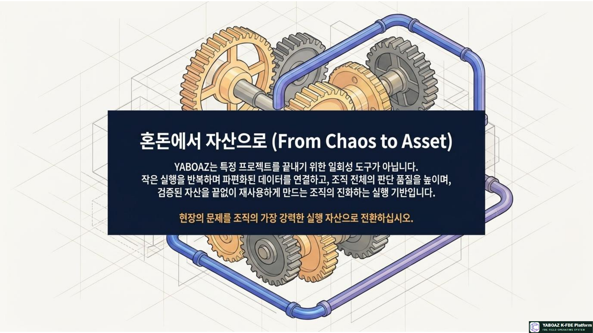
YABOAZ 현장의 언어 참고 슬라이드 1512. 최종 정리
YABOAZ는 현장의 혼돈을 자산으로 바꾸는 플랫폼입니다. 현장의 말과 경험을 AI가 이해할 수 있는 구조로 바꾸고, 사람이 승인할 수 있는 판단 체계로 만들며, 실제 워크플로로 실행하고, 검증된 결과를 다음 프로젝트의 출발점으로 남깁니다.
YABOAZ의 최종 정의YABOAZ는 현장의 언어를 온톨로지, AI Agent, 워크플로, KPI, 운영 매뉴얼로 전환하여 실행 가능한 조직 자산으로 만드는 K-FDE 현장 실행 플랫폼입니다.
AI가 제안하고 → 사람이 승인하고 → 현장에서 검증하며 → 조직의 자산으로 축적합니다.
현장의 언어를 실행 가능한 자산으로 바꾸십시오.